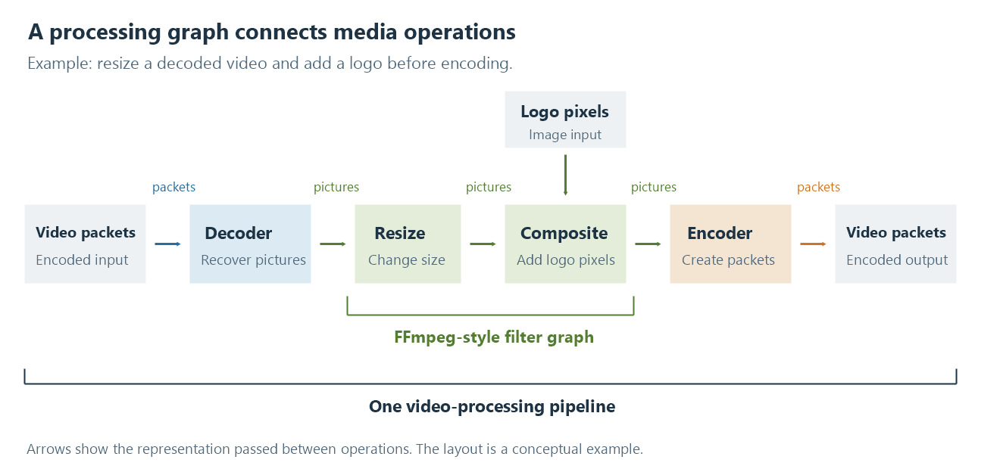
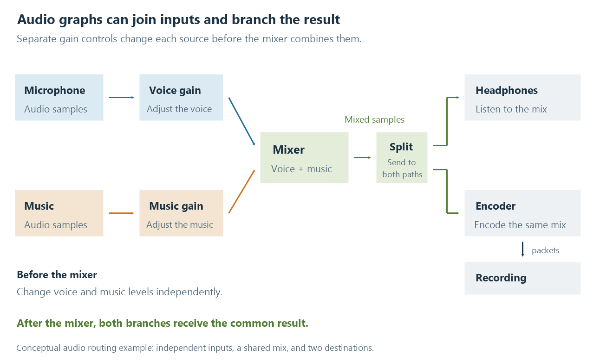

What is a graph?
A graph describes nodes and their connections, helping explain how audio and video are processed and how processing choices relate.
A graph describes a set of things and the connections between them. The things are called nodes (or vertices), and the connections are called edges. On a map of railway connections, stations could be nodes and the routes between them could be edges. Arrows give connections a direction, producing a directed graph.
The word also means a chart, such as a plot of bitrate over time. Here it means the network of connected nodes. The familiar boxes-and-arrows drawing is a view of that structure; software can also describe the same nodes and links in text, without displaying a diagram.
A simple chain is already a graph. Graphs become particularly useful when several inputs meet, one result feeds several destinations, or a decision offers alternative routes.
A video graph shows where the pictures go
In a media processing graph, nodes perform operations and connections carry their results to other nodes. A video decoder produces pictures, a scaling operation changes their size, and an encoder turns prepared pictures into an encoded stream.

A conceptual video processing path. The arrows between operations show data dependencies, not how long each operation takes.
Read the main path from left to right. Encoded video enters the decoder. The recovered pictures are resized, combined with a logo, and passed to the encoder. The upper connection supplies the logo's pixels to the compositor, the operation that combines the two images.
That second input is why the graph explains more than a list such as “decode, resize, composite, encode.” The compositor needs both the video picture and the image to place over it. The connections identify where each comes from and which result the encoder receives.
Order matters too. Placing the logo over the video before resizing would resize the logo along with the picture. Resizing the video first leaves the subsequently added logo at its chosen size. Both arrangements contain the same operations, but connecting them differently changes the result.
The filter graph article develops these relationships with more detailed examples.
Audio graphs make mixing and routing visible
Imagine recording a voice over background music while listening through headphones. The voice and music need separate volume controls, their adjusted signals need to be mixed, and the result needs to reach both the listener and the recording.

Two inputs join into one mix; that mix then supplies two destinations.
Before the mixer, each branch still carries its own signal. Lowering the music gain there changes the balance between music and voice. A volume adjustment after the mixer would affect both together, because that connection carries their combined samples.
The outgoing branches explain another useful distinction. The headphones receive audio for listening, while the recording branch encodes the mix for storage. A change made only within the recording branch affects that branch's result. A change before the split reaches both destinations.
This is the same graph vocabulary as in video: chains connect successive operations, joins combine inputs, and splits supply several paths. A video compositor joins pictures where an audio mixer joins signals. A video split can feed separate paths for a full-size output and a scaled thumbnail, just as the audio split supplies listening and recording.
Connections describe the data as well as the route
An operation needs inputs it can understand. A video scaler works with pictures; an audio mixer works with samples. Even two audio operations may need a converter between them if their sample formats, channel layouts, or sample rates do not agree. Timing determines which samples or pictures belong together.
Graph nodes therefore often have distinct inputs and outputs, sometimes called ports or pins. Connecting an output to an input expresses a specific relationship: this result supplies that requirement. The arrows in the video illustration are labelled “packets” and “pictures” because decoding and encoding change the representation carried by those connections.
The boundary of a graph depends on the software. An FFmpeg filtergraph operates on decoded video frames or audio samples, between decoding and encoding in a typical transcode. DirectShow uses filter graph for a broader arrangement that can include sources, decoders, and playback outputs. The complete transcoding pipeline also includes selecting streams and packaging the encoded result.
These uses share the same underlying idea. The graph describes how components fit together; the particular application defines what those components and connections mean.
A graph can also describe a decision
Emby Server's Expert Mode illustrates another use of the idea: a decision graph. It represents choices about which transcoding configuration should handle an operation and what alternatives are available.
Here a GPU node represents a device with a particular configuration. The same physical GPU can appear in several nodes because each describes a different way of using it. Conditions express when choices apply, and groups collect related choices. A graph can make those relationships visible when a flat list of enabled devices would leave them implicit.
The meaning of an arrow has changed. In the processing examples above, it means that one operation supplies media to another. In Emby's configuration graph, it expresses how choices are considered. Several GPU nodes describe alternatives for an attempt, rather than a picture travelling through several GPUs in succession.
This is what makes graphs useful across such different tasks: the same language of nodes and connections can describe either the work or the decisions that choose the work. To understand a particular graph, first identify what its nodes represent and what its links mean. The Expert Mode documentation explains the controls and evaluation rules for that application.
See Also
- Media filter graphs
- How a transcoding pipeline works
- How media APIs connect applications to hardware